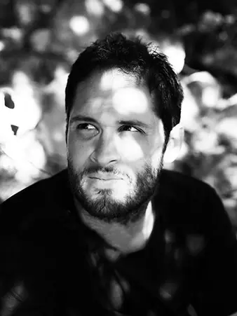
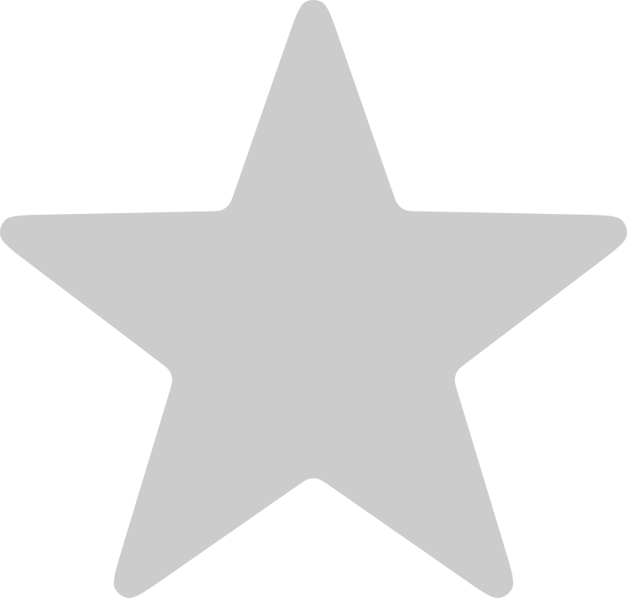

Graphiste freelance à Caen — Identité Visuelle, Web & UI/UX
Création sur mesure de votre identité visuelle (branding), logo unique, webdesign percutant et expériences utilisateur intuitives. Je vous accompagne pour concevoir des visuels cohérents, professionnels et mémorables.
Mon objectif : traduire visuellement les valeurs de votre entreprise et vous démarquer de la concurrence grâce à un design sur mesure.

Un logo bien dessiné dure dans le temps, le logo Seagale date de 2014 et est toujours activement utilisé et très apprécié.
Graphiste indépendant en Normandie, disponible dans toute la France
Basé à côté de Caen, dans le Calvados, je privilégie la proximité avec les entreprises locales en me déplaçant facilement dans toute la Normandie (Deauville, Rouen, Le Havre, Évreux...) pour nos réunions de cadrage et ateliers créatifs. Avoir un créatif proche de chez soi, c’est s’assurer d’une collaboration efficace, fluide et de confiance.
Je travaille également à distance pour accompagner des entrepreneurs, entreprises, agences et startups partout en France. Grâce à une organisation rodée et des outils adaptés, la distance n'a aucun impact sur la fluidité et la qualité des projets que nous menons ensemble.
En travaillant avec moi, c'est l'assurance d'un interlocuteur unique, réactif et disponible du premier brief jusqu'à la livraison finale.
Logo, web design et UI : l’impact d’un design pensé pour vous
Depuis 2009, je pense, dessine et crée des identités visuelles, web design et design d'interface de qualité, entièrement sur mesure. Quand un client découvre votre entreprise, c’est souvent par un logo, un site web ou une application. Ces éléments ne sont pas juste de jolis dessins : ils racontent qui vous êtes, ce que vous proposez, et surtout, pourquoi on peut vous faire confiance.
Le logo doit créer un premier contact fort et mémorable. Une identité visuelle cohérente et harmonieuse, c’est ce qui fait qu’on vous reconnaît du premier coup d’œil, même au milieu d’une foule de concurrents. Et une interface soignée, c’est ce qui transforme un simple visiteur en client fidèle parce qu’il trouve simplement ce qu'il était venu chercher : il se sent compris, guidé et en confiance.
Je vous guide dès le départ avec des conseils sur mesure, et je reste à vos côtés tout au long du projet pour construire une identité visuelle forte et cohérente. L’objectif ? Vous aider à vous démarquer durablement, parce qu’aujourd’hui une entreprise ne se juge plus seulement sur ce qu’elle vend, mais sur comment elle le présente.
Extraits de pictogrammes, de blocs, boutons et d'autres éléments UI pour le web design de Coin District
Mes domaines de compétences
En tant que graphiste indépendant, je propose des services sur mesure adaptés à vos besoins :
- Identité visuelle : création de logo et de charte graphique
- Déclinaison pour vos supports : mise en page graphique de vos supports (papeterie, brochure, carte de visite, dépliant, plaquette, rapport d'activité, flyer, affiche, bâche, PLV...)
- Web design : conception d'habillage de site internet (front & back end), wireframe (low & high fidelity), newsletter, bannière fixe et html5, réseaux...
- Design d'interface (ui/ux) : travail sur l'ergonomie et création d'interface graphique d'application web, desktop et mobile, dashboard, app smartphone et tablette...
Chaque projet débute par un échange approfondi pour cerner vos besoins et établir un brief précis. Ensuite, je mène une phase de recherche et d’exploration graphique, qui aboutit à une première proposition visuelle. Viennent alors les allers-retours créatifs, où chaque ajustement affine le résultat. Enfin, je finalise le projet en vous livrant les fichiers dans les formats les plus adaptés à vos usages.
Pourquoi travailler avec moi ?
- Je mets à votre disposition mon expertise de freelance, avec plus de 17 années d'expérience en design graphique
- Je suis réactif, je me rends disponible pour vous, et je suis entièrement transparent avec mes clients
- En tant qu'indépendant, vous n'aurez affaire qu'à moi tout au long du projet
- Mes tarifs sont clairs, le devis est évidemment gratuit et sans aucun engagement
Je m’engage à allier rigueur et réactivité : des livrables de qualité dans les temps et une écoute permanente pour m’adapter à vos attentes.
Un logo durable se crée avec précision, cela lui confère un rendu équilibré, harmonieux et qualitatif.
Ils m'ont fait confiance
Être indépendant, c'est avant tout prendre soin de ses clients, comprendre et cibler leurs besoins rapidement, sans superflu. Répondre à leur demande à travers mes visuels de façon réactive, précise et esthétique.

Johann, Étude ROPION
Office notarial
J'ai récemment eu à profiter des talents d'Anthony pour la création de toute la charte visuelle de mon office notarial. Au départ je ne m'attendais pas à obtenir le quart de la qualité furnished, aucune déception à quelque niveau que ce soit, Anthony a su être précis, réactif, professionnel et d'une grande sympathie. Je mets 10/10 sans aucune réserve.
Matthieu, SEAGALE
Vêtements techniques
Anthony a été très à l'écoute de nos attentes et idées. Il a également livré son travail dans le temps initialement prévu. Il a réalisé l'entière charte graphique de notre marque de vêtements ainsi que son logo. Des années après, nos clients et nous-même en sommes toujours aussi fans !
Vincent, removo
Volets roulants
Ça fait presque 10 ans que nous travaillons avec Anthony sur nos différents projets et nous avons toujours été satisfaits. Rapide et efficace. Je recommande.
Zoran, L&V Immobilier
Agence immobilière
Nous avions un projet de création d'agence immobilière dite "2.0" avec une idée bien précise de l'image que nous souhaitions véhiculer. Anthony a su nous écouter, identifier nos attentes et nous proposer des visuels accrocheurs et mémorables. Ensemble nous avons retenu un logo qu'il a ensuite retravaillé jusque dans le détail. Aujourd'hui, les clients retiennent notre marque et l'image qu'ils en ont est en accord parfait avec l'ADN de notre entreprise. Merci Anthony.
Pierre, Nounouland
Garde d'enfants
Anthony est très professionnel. Je lui ai commandé un logo et un template de site internet. Il a été à l'écoute de mes demandes et a su s'adapter à mes besoins. Vous pouvez lui faire confiance sans hésiter.
Alexandre, Unique PARIS
Conciergerie privée de luxe
Anthony a été excellent de bout en bout dans sa prestation : nombreuses propositions de maquettes, excellente compréhension de l'univers de nos services, parfaite exécution de la charte graphique de notre société : logo, maquette web, carte de visite, flyer, brochure commerciale 12 pages. Un vrai plaisir de A à Z !
Philippe, Au bout du fil
Association pour les personnes âgées
Très agréable collaboration, Anthony est créatif, réactif et à l'écoute. Nous travaillons maintenant régulièrement ensemble et j'en suis très satisfait.
Contact
Un projet ? Discutons-en !
Contactez-moi pour un devis gratuit ou pour échanger sur vos besoins graphiques :
anthony (at) dktdesign.com / et par téléphone 06 86 14 73 92
Je suis disponible en Normandie et dans toute la France